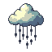
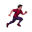
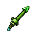
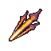
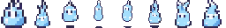
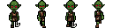
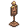
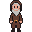

Игровой контур
Клиент строится вокруг Godot-сцен, top-down мира, лучника, NPC, мобов, PvE/PvP, инвентаря и визуальных скиллов.
MMORPG / Pixel World / Real-time Match
Локальный прототип top-down MMORPG: пиксельный мир, лучник, мобы, NPC, инвентарь, лут и realtime-логика на Nakama.
О проекте
Клиент строится вокруг Godot-сцен, top-down мира, лучника, NPC, мобов, PvE/PvP, инвентаря и визуальных скиллов.
Серверная часть опирается на Nakama match loop, RPC и игровые данные из JSON-конфигов с последующей генерацией runtime-бандла.
Репозиторий уже содержит Godot-клиент, Nakama runtime, docker-compose для локального окружения и тестовые скрипты.
Стек
Мир
Автоатака, дистанционные навыки, дебаффы, моб-хайлайт, стрелы, трупы с лутом и окно добычи после боя.




Слаймы, гоблины, манекены, торговцы и разные вариации игрока.




Сумка, персонаж, миникарта, чат, nameplate, админ-панель и нижняя панель способностей.
Tile-based карта, коллизии, click-to-move, AStarGrid2D и сервер-авторитетное движение.
Roadmap
Миграция на Godot-клиент, базовый мир, runtime-модули, локальная инфраструктура и игровые данные уже в репозитории.
Довести стабильный запуск клиента, realtime-сцену и полный рабочий цикл авторизации и мира.
Развивать контент: баланс, новые мобы, новые предметы, новые карты и более уверенный production flow через PR.
Запуск
cd /home/bvd/codex/GG/site
python3 -m http.server 8080
Затем открой http://127.0.0.1:8080 в браузере.
cd /home/bvd/codex/GG
./run-godot-demo.shЛокальный launcher уже добавлен и использует подготовленные библиотеки из домашней директории.